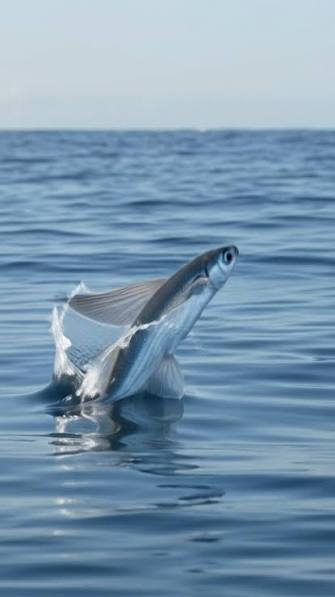
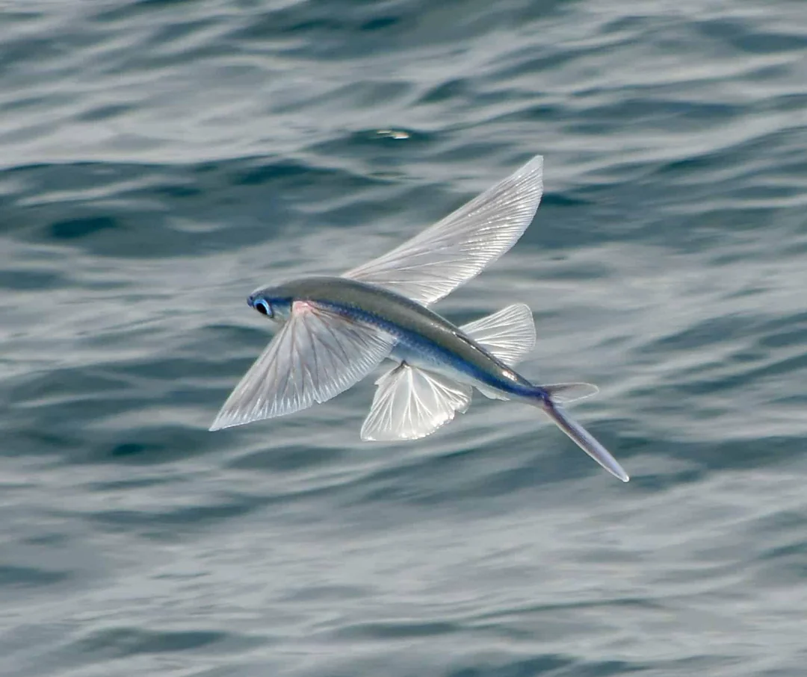
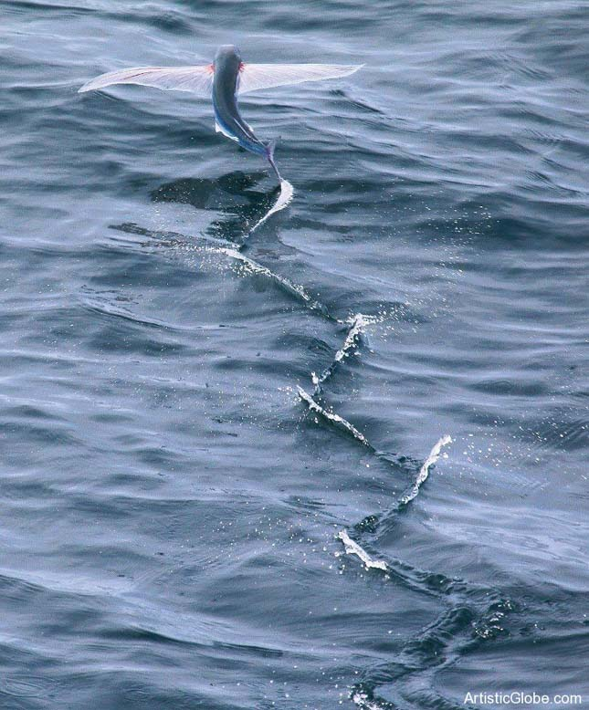

the dragons of the Ocean
Flying fish (Exocoetidae) are a family of marine fish found mainly in warm tropical ocean watrs. Their most remarkable feature is their unusually large pectoral fins, which allow them to leap out of the water and glide through the air!
Click the buttons to switch

The fish beats its tail rapidly under water up to something like 70 times per second, to build enough speed to break through th surface

Onec out of the water, it spreads its large fins and gliges useing airplane magic.

At the end of the glide, the fish either splashes back into the water or dips its tails to push off for another consecutive glide.
There are over 40 species of flying fish globally. Here are a few notable examples:
| Common name | Scientific name | Average size | Fin |
|---|---|---|---|
| Tropical Two wing flyingfish | Exocoetus volitans | 20 cm | Two large pectoral |
| Atlantic flyingfish | Cheilopogon melanurus | 30-45 cm | Four large fins (pectoral and pelvic) |
| Japanese flyingfish | Cheilopogon doederleinii | 35 cm | Strong, broad gliding fins |
Click any question
No, they do not flap their fins like birds. Instead, tehy glide similary to sailplanes or gliders, using wind.
Most glides last arond 10 to 20 seconds, but the longest documented glige recorded lasted over 45 seconds!
While glideing helps them escape dangerus fish below, they can become food to seabirds from above.